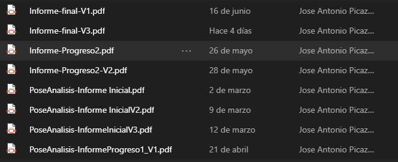

Human Action Recognition
Jose Antonio Picazos Carrillo - 1495152
Este proyecto se centra en el proceso de reconocimiento y clasificación de las acciones que está realizando una persona, también conocido como Human Activity Recognition.
Para realizar el reconocimiento se ha hecho uso de un algoritmo de pose estimation, el cual proporciona el esqueleto de la persona y es de ayuda para clasificar la acción que se está realizando. Para entrenar el modelo encargado de realizar la clasificación se ha hecho uso de una red neuronal recurrente como es LSTM y también se ha hecho uso AutoML.
Todos estos métodos se han puesto a prueba con datos reales para comprobar su validez.
Repositorio github
Listado de cambios
- Informe inicial
- PoseAnalisis-Informe InicialV1.pdf: primera versión del informe inicial.
- PoseAnalisis-Informe InicialV2.pdf: extensión de la introducción, objetivos y metodología. También añadido apartado de planificación.
- PoseAnalisis-InformeInicialV3.pdf: traspasada toda la información al formato final del informe y modificado apartado de planificación y añadidas algunas imagenes.
- Informe Progreso 1
- PoseAnalisis-InformeProgreso1_V1.pdf: añadida primera versión del apartado de desarrollo en el que se han explicado los pasos realizados hasta el momento.
- PoseAnalisis-InformeProgreso1_V2.pdf: añadidas imágenes de los resultados del análisis autoML y de reconocimiento. Extendida la introducción.
- Informe Progreso 2
- Informe-Progreso2.pdf: revisado apartado de desarrollo respecto al análisis autoML y clasificación de poses.
- Informe-Progreso-2.pdf: añadidas pequeñas conclusiones y introducción al apartado de reconocimiento de actividad.
- Informe final
- Informe-final-V1.pdf: añadida parte del desarrollo de reconocimiento de poses.
- Informe-final-V2.pdf: añadidas imágenes y toda la información del proyecto.
- Informe-final-borrador.pdf: informe entregado como borrador tras corregir y añadir algunas imágenes.
- Informe-final-RevisadoV2.pdf: añadidas imágenes restantes y revisión completa del texto del informe corrigiendo faltas de ortográficas y expresión escrita.
SandBox
Imagen de los ficheros subidos al teams antes de las entregas parciales.
